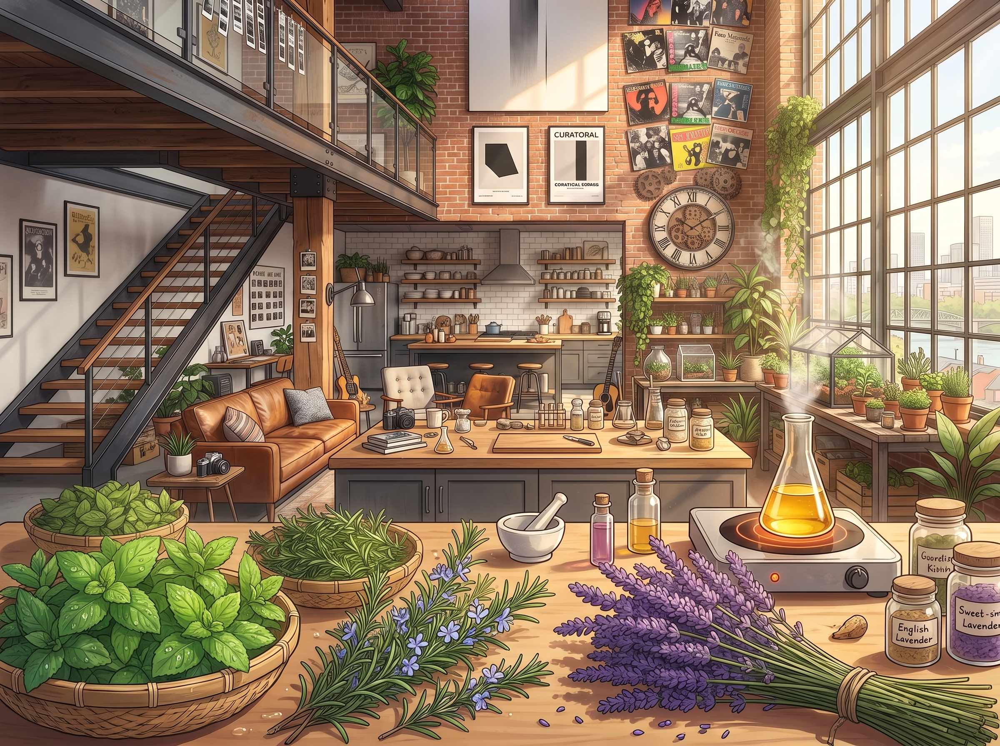

草本煉金工坊

週六午後，廚房中島台被改造成了一間微型「草本煉金工坊」。
天台剛採摘下來的香草堆滿了竹編淺筐：帶著晨露清涼感的綠薄荷、泛著微苦松香的迷迭香，以及一大蓬曬乾後散發著甜香的英國薰衣草。空氣裡彌漫著濃郁而純淨的植物氣息，混雜著電陶爐上慢火加熱冷壓甜杏仁油的溫潤堅果香。
四個人圍在中島台四周，各自認領了流水線上的一道關鍵工序。
一、首席調配師 Kate：精準把控靈魂配方
Kate 繫著圍裙，戴著乾淨的棉麻手套，手裡拿著小銀勺和微型電子天平。
她將洗淨擦乾的薄荷葉輕輕揉碎，破壞植物表皮的油胞，隨後按嚴格比例將迷迭香與薰衣草投入雙層耐熱玻璃量杯中。
「低溫浸泡需要維持在攝氏 45 度左右，」Kate 輕聲叮囑著，眼神專注溫和，「溫度太高會破壞薄荷醇的清涼感，太低又沒辦法把脂溶性香氣完全激發出來。」
二、控溫工程師 Chloe：重型儀表跨界監控
Chloe 坐在高腳凳上，手裡拿著一支從車間順來的工業級紅外線測溫槍，對著玻璃量杯的液面不斷「嗶嗶」掃描。
「放心吧 Marsh，本大師的溫控精度比德國恆溫箱還穩。」Chloe 盯著測溫槍屏幕上的數字，另一隻手拿著木調酒棒以極其均勻的角速度攪拌著基底油，「目前液溫 45.3 度，油膜流動性完美，沒有任何焦化跡象。」
三、品牌視覺總監 Max：暗房級貼紙與包裝
Max 戴著那副黑框工作眼鏡，坐在桌角用極細勾線筆繪製深色精油滴管瓶的標籤。
她用剛洗出來的微型黑白相紙邊角料做底紙，上面手繪著天台水霧、胡桃木相框與四葉草的微縮圖案，並用打孔機在邊緣壓出復古郵票齒孔。
「這批精油的代號就叫『波特蘭天台微風』，」Max 吹乾標籤上的墨水，小心翼翼地用無酸膠水貼在深琥珀色玻璃瓶身，「每瓶都帶有獨立手繪編號。」
四、奢華品控總監 Victoria：名媛的終極嗅覺盲測
當第一批經過超細亞麻布過濾、呈現出澄澈淡綠色的原萃精油冷卻後，Victoria 戴著絲質手套，用玻璃滴管吸取了一滴，輕輕滴在自己的手腕內側。
她優雅地抬起手腕，在鼻尖前三公分處輕輕扇動空氣，閉上雙眼細細品味前調、中調與尾調的層次轉換。
客廳裡安靜了幾秒鐘。
Victoria 緩緩睜開眼，嘴角掠過一抹滿意的弧度，隨後挑剔地清了清嗓子：「前調的綠薄荷爆發力很足，迷迭香的中和壓住了過於甜膩的薰衣草尾香。雖然比不上格拉斯小鎮的百年工坊……但勉強夠資格裝進我的黃銅防震盒裡隨身攜帶了。」
「耶！全票通過！」Chloe 歡呼一聲，順手用沾著薄荷油的指尖在 Victoria 鼻尖上迅速點了一下。
「Price！！妳的手髒死了！」Victoria 像觸電一樣後退，臉頰瞬間泛起一層羞惱的微紅，卻在聞到鼻尖那股清涼提神的香氣時忍不住噗嗤一聲笑了出來。
陽光透過 Loft 挑高的大玻璃窗灑進廚房，將中島台上的一排排琥珀色小瓶照得晶瑩剔透。草本植物的清冽香氣在整個屋子裡緩緩流淌，伴隨著四個人的笑罵與打鬧，將這個普通的週末午後，釀成了最醉人的生活切片。